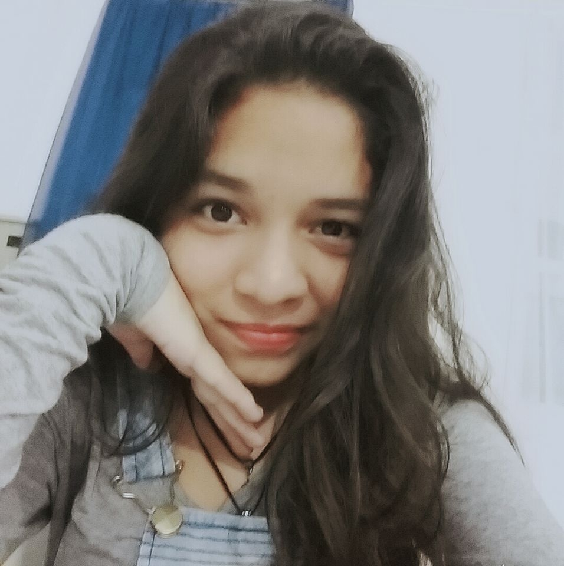
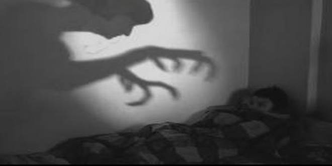
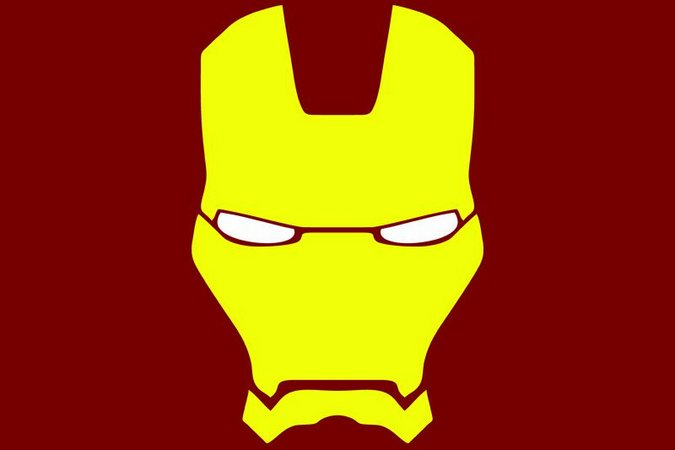
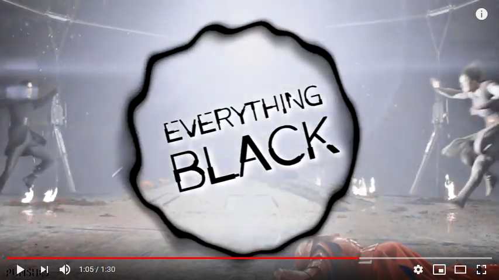
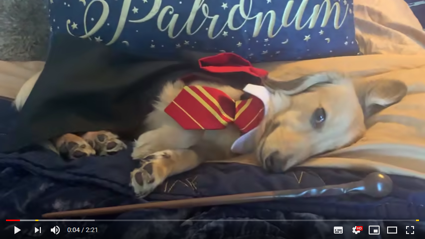

|  | AlyciaGomes |
Idade 16 |
Peso 53kg |
Altura 1,60 |
Data de nascimento 30/06/2002 |
| Contatos | Rua Rio Branco 63, São José Operário - Manaus,AM - Brasil Telefone: +55 92 99222-7893 Email: alyciagomess@gmail.com |
| Qualificações Academicas |
• Ensino Médio (incompleto) FMM - Fundação Matias Machline Manaus, AM - Brasil 2017 - Presente • Ensino Fundamental EEDJDR - Escola Estadual Dom Jacson Damasceno Rodrigues Manaus, AM - Brasil 2013 - 2016 |
| Idiomas | English(intermediário,intermediário,intermediário)- FMM Portuguese: Native |
| Áreas de Interesse |
|
| Ato de Coragem | Aconteceu em 2016 quando eu tinha 14 anos, nessa época eu namorava um garoto, e toda vez as madrugadas a gente marcava de se encontrar, e o meu maior ato de coragem foi quando eu fugi as 3;00h da manhã e pulei o muro da casa dele |
| Medo |  |
|
Tenho medo de assombração, do desconhecido, nem consigo pensar em dormir sozinha
|
Dia de sorte |
Quando eu tava no primeiro ano do ensino médio, eu era muito ruim em exatas
(matemática, física e programação), entao devido á essa dificuldade eu acabei reprovando e saindo da fundação.
Porém, no ano seguinte(2018) recebi a notícia de que eu tinha sido repescada, ou seja, voltaria pra fundação já no segundo ano,
e de tantos que reprovara, eu fui uma das escolhidas, e hoje, estou concluindo meu ensino médio de informática.
Esse com certeza foi meu maior dia de sorte na vida. |
| Animais | Eu tenho apenas um cachorro que se chama Bethoven, ele é um chow chow preto
e bastante bravo, porém brincalhão e muito fofo. Ele está pra completar 2 anos de idade
|
| Herói |  |
|
Gosto muito do homem de ferro, pois mesmo não tendo poderes, ele salva o mundo
utilizando sua maior aliada, sua inteligencia... Um dia quero chegar no nível do homem de ferro
|
|
| Músicas |
Michael Jackson - Rock With You Fleetwood Mac - The Chain Happy Together - Turtles |
| Vídeos |


|
| Sonhos | Viajar o mundo, Conquistar casa, carro e indepedencia. Abrir abrigo de animais abandonados
|
| Curso | Informática. Entre os tres(mecatronica, eletronica e informática)
era o que eu mais conhecia e eu tambem sempre quis fazer um curso de informática
|
| + Informações | Eu namoro a 6 meses o Cristian Aragão, estamos juntos desde novembro de 2018, eu sou potterhead (fã de harry potter), gosto mt de star wars tbm, amo cachorros... Minhas matérias favoritas são biologia e química, tenho 3 irmãos, 1 menina e 2 meninos, meu pai faleceu em 2008 e hoje vivo com a minha mãe e meu padrasto |